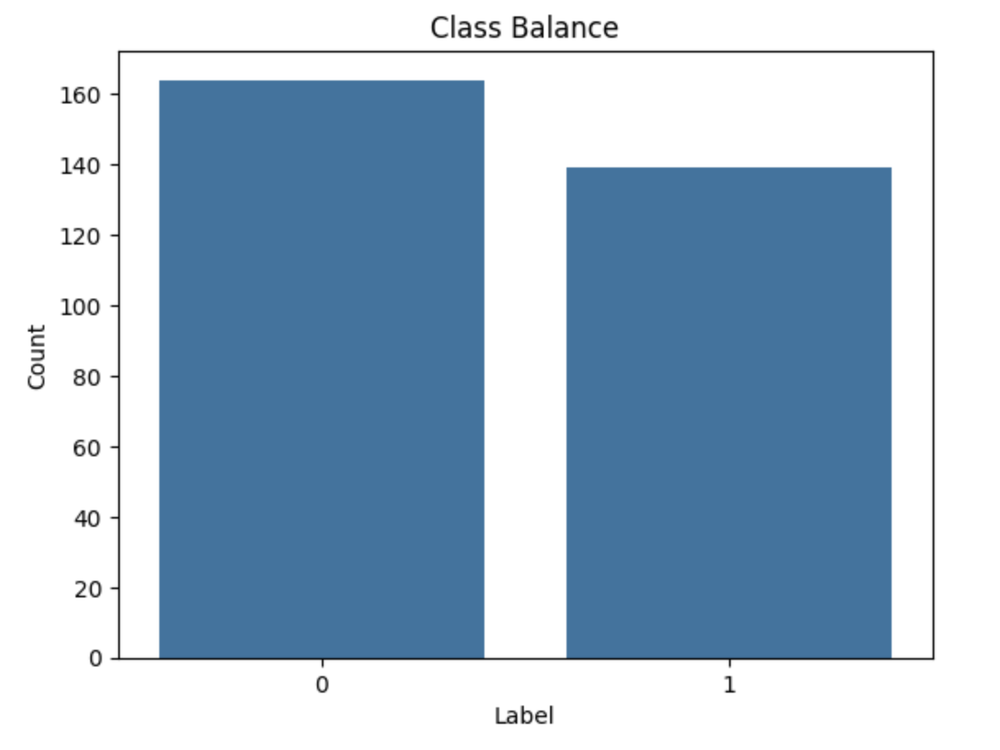
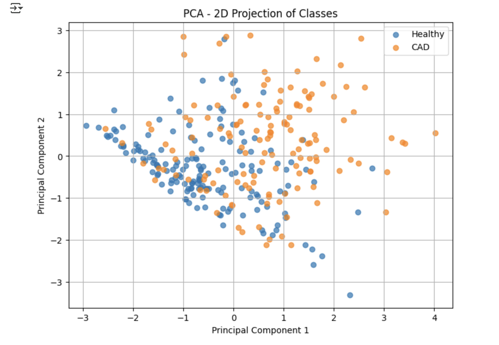

Classification of Coronary Artery Disease
Coronary heart disease (CAD) is the world's leading cause of death [2]. CAD occurs due to narrowing of the three main coronary blood vessels by atherosclerotic plaques [2]. The dataset, UCI Machine Learning Repository contains a Heart disease dataset that contains 303 datapoints [5]. Each datapoint contains health data for an individual patient who visited Cleveland Clinic between May
1981 and September 1984 [2]. This project compares classifiers to classify patients as with CAD or healthy. Previous work used SVM, Random Forest, Decision Tree, Naïve Bayes, K-NN, and xGBoost, Logistic Regression, and a Multi-Layer Perceptron to classify patients as having CAD or not [1,2,3,4]. Sensitivity and Specificy were used to evaluate the model [2]. For this project, I will compare the performance of a Nonlinear SVM (Kernel SVM), Random Forest, and Multi-Layer Perceptron model in classifying patients as healthy or ill.
The results of the
analysis can be found in the following workbook:
Analysis Workbook
The classes are balanced with 139 patients having heart disease and 164 patients not having heart disease.

Classes are Balanced
It is interesting to check if the data is linearly separable, so I checked the linear separabilty mathematically using centroids. To check the linear separability of the two classes (with heart disease or without heart disease), I computed the centroids of each class. Then I calculated the vector between the centroids. This is the Direction vector. The hyperplane that divides the classes is perpendicular to the direction vector and centered at the midpoint of the centroids. I projected each point onto the Direction vector and then checked which side of the midpoint it falls. If the accuracy is high (>80%) then the classes are linearly separable. I only considered continuous features and calculated an accuracy of 54%, so the data is not linearly separable.
It is also clear that the classes are not linearly separable as shown in the PCA visualization of the classes.

PCA Visualization of Classes
There are many potential features in the dataset. There are categorical and continuous features. I conduct Data Analysis of the features to better understand there potential use in models downstream.
The first feature I evaluate is Age. Age refers to the age of the patient. In the dataset, patients in their 60's tend to have CAD. 27% of 60 year olds have CAD compared to other ages. I conducted a t-test to compare the average age of the healthy and sick and fail to reject the null that the ages are similar between CAD and Healthy patients (p value: 8.96e-05).
Age_by_class_CAD
The next feature I compared between the two classes is Sex. I conducted a Chi-Square test of independence and found that sex and health status are not independent (p value: 2.67e-06).
References:
[1] Detrano R, Janosi A, Steinbrunn W, Pfisterer M, Schmid JJ, Sandhu S, Guppy KH, Lee S, Froelicher V. International application of a new probability algorithm for the diagnosis of coronary artery disease. Am J Cardiol. 1989 Aug 1;64(5):304-10. doi: 10.1016/0002-9149(89)90524-9. PMID: 2756873.
[2] N. L. Husni et al. (eds.), Proceedings of the 7th FIRST 2023 International Conference on Global Innovations
(FIRST-ESCSI 2023), Advances in Engineering Research 232,
https://doi.org/10.2991/978-94-6463-386-3_2
[3] Rosyid, A., Pranata, S., & Ramadhan, M. R. (2022). Application of machine learning method for heart disease diagnosis. Journal of Physics: Conference Series, 2161(1), 012013. https://doi.org/10.1088/1742-6596/2161/1/012013
[4] Sajeev, S. et al. (2019). Deep Learning to Improve Heart Disease Risk Prediction. In: Liao, H., et al. Machine Learning and Medical Engineering for Cardiovascular Health and Intravascular Imaging and Computer Assisted Stenting. MLMECH CVII-STENT 2019 2019. Lecture Notes in Computer Science(), vol 11794. Springer, Cham. https://doi.org/10.1007/978-3-030-33327-0_12
[5] Janosi, A., Steinbrunn, W., Pfisterer, M., & Detrano, R. (1989). Heart Disease [Dataset]. UCI Machine Learning Repository. https://doi.org/10.24432/C52P4X.